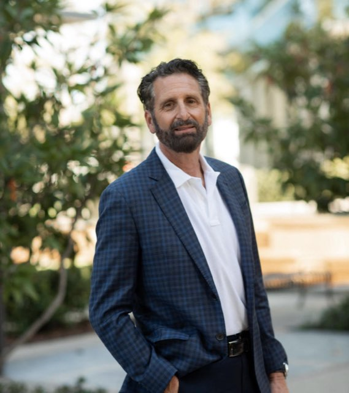

Bio
Experience. Perspective. Candor.

About
Guy Marcozzi is an independent board member, executive advisor, and speaker. A leadership confidant to CEOs and senior teams, he helps leaders thrive through change — interpreting business trends, sharpening strategy, and channeling an organization’s energy toward defined, fully aligned goals.
Guy spent his executive career at Duffield Associates, the Delaware-based engineering firm known for its work in soil, water, and the environment, rising to President and CEO. He led the firm through its 2021 merger into Verdantas, a national environmental and engineering consultancy, where he served as Executive Vice President and later as a senior consultant to the combined company.
A licensed Professional Engineer and Fellow of the American Society of Civil Engineers, Guy holds bachelor’s and master’s degrees in civil engineering from the University of Delaware, where he has also taught as an adjunct professor in the College of Engineering. He was named Delaware’s Engineer of the Year in 2012 and its first Young Engineer of the Year in 2000.
Guy is the author of Mostly True: Observations about Life, Work and Being Human (Molto Tempo, 2026), written under the pen name Marco Guy.
Board & Advisory Experience
- University of Delaware Board Member
- ESOP, nonprofit, professional, and business organizations Board leadership roles, including president of the Delaware Engineering Society and the Delaware Association of Professional Engineers
Selected Career Highlights
- President & CEO, Duffield Associates Led the Delaware engineering firm and guided it through its 2021 merger into Verdantas
- Executive Vice President, Verdantas Senior leadership of the combined national firm following the merger
- Delaware Engineer of the Year, 2012 Awarded by the Delaware Engineering Society; also Delaware’s first Young Engineer of the Year (2000)
- Adjunct Professor, University of Delaware College of Engineering; B.S. and M.S. in Civil Engineering, University of Delaware
- PE · F.ASCE · LEED AP BD+C Licensed Professional Engineer in multiple states; Fellow of the American Society of Civil Engineers
Speaking & Media
Available for keynotes, panels, podcast appearances, and executive roundtables. Topics include leadership, organizational resilience, culture transformation, and the intelligent use of technology. Guy also hosts GeoHeroes, an interview series on the Geoprofessional Business Association’s GBA Podcast.
Connect on LinkedIn or reach out at guy@moltotempo.com.